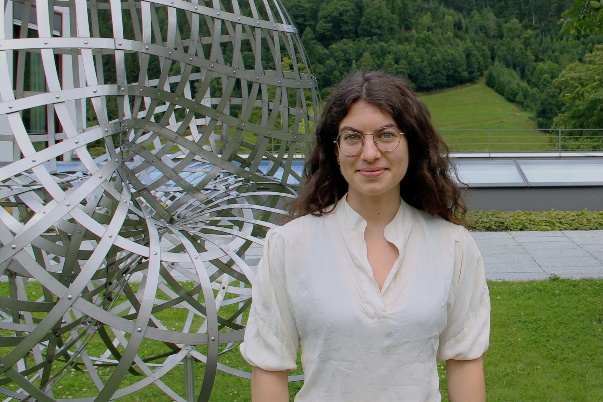

I am a Postdoctoral reasearcher (Junior Visiting positions) at the Centro di ricerca matematica Ennio De Giorgi (Scuola Normale Superiore di Pisa). I completed my PhD at University of Tübingen in 2025, under the supervision of Gerhard Huisken and Carla Cederbaum.
You can speak to me in english, italian, german or spanish.
Research interests

My research concerns Geometric Analysis and Nonlinear PDEs (mostly elliptic), in particular with regard to applications to General Relativity and Conformal Geometry.
Contact
Centro di ricerca matematica Ennio De
Giorgi,
Scuola Normale Superiore di Pisa
Piazza dei Cavalieri 3, 56126, Pisa, Italy
Email: albachiara.cogo [at] sns [dot] it